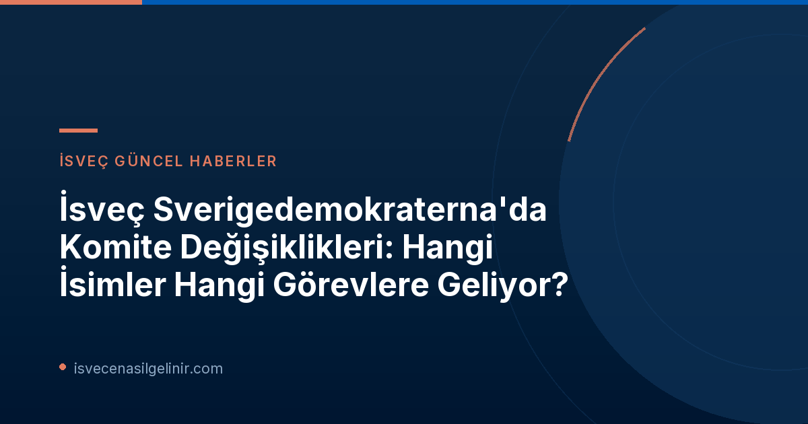

Sverigedemokraterna'da Büyük Değişim Rüzgarları
SVT Nyheter Inrikes tarafından bugün (5 Ekim 2026) yayınlanan bilgilere göre, Sverigedemokraterna partisi Riksdag grubunda kapsamlı bir değişikliğe gidiyor. Bu değişiklikler, 2026 yılında yapılacak genel seçimler öncesinde partinin stratejik konumlanmasını güçlendirme ve bazı önemli isimlere yeni sorumluluklar verme amacı taşıyor. Partinin basın sözcüsü Oskar Cavalli-Björkman, bu tür değişikliklerin yeni bir yasama dönemi öncesinde partinin doğal gelişiminin bir parçası olduğunu belirtiyor. Ancak, içeriden gelen bilgilere göre bu değişiklikler, parti içinde bazı memnuniyetsizliklere de yol açmış durumda.
Komite Başkanlıklarında Yeni Yüzler ve Stratejik Hamleler
SD'nin önde gelen isimleri, yeni dönemde farklı komitelerde görev alacak. İşte bu önemli atamalar ve değişiklikler:
Mattias Karlsson: Kültürel Mirasın Yeni Sözcüsü
SD'nin önemli profillerinden Mattias Karlsson, Kültür Komitesi (kulturutskottet) başkanı olarak yeni bir göreve atanıyor. SVT'ye yaptığı açıklamada Karlsson, bu yeni görevin kendisi için köklerine dönmek anlamına geldiğini ve kamuoyunu bilgilendirme konusunda daha güçlü bir konuma geleceğini belirtiyor. Karlsson, parti olarak İsveç kültürel miras konularına büyük önem verdiklerini vurgulayarak, özellikle Stockholm'deki Akdeniz Müzesi'nin (Medelhavsmuseet) zorlu ekonomik durumuna dikkat çekiyor. Bu hamle, partinin kültürel politikalarını ön plana çıkarma isteğini gösteriyor.
Martin Kinnunen: Çevre ve Tarımdan İş Dünyasına Geçiş
Martin Kinnunen, daha önce Çevre ve Tarım Komitesi (miljö- och jordbruksutskottet) üyesi iken, şimdi Ticaret Komitesi (näringsutskottet) için partinin birinci adayı olarak gösteriliyor. Bu değişiklik, Kinnunen'in siyasi kariyerinde farklı bir alanda sorumluluk üstlenmesine işaret ediyor.
Tobias Andersson: Eğitim Komitesinde Yeni Görev
Geçtiğimiz yasama döneminde Ticaret Komitesi başkanı olan Tobias Andersson, bu dönemde Eğitim Komitesi (utbildningsutskottet) üyesi olarak görev yapacak. Andersson'un eğitim alanındaki bu yeni rolü, partinin eğitim politikalarına daha fazla ağırlık vereceğinin bir göstergesi olabilir.
Henrik Vinge: Adaletten Finansa Kritik Hamle
Partinin Birinci Genel Başkan Yardımcısı Henrik Vinge, Adalet Komitesi (justitieutskottet) başkanlığından Finans Komitesi (finansutskottet) için partinin bir numaralı adayı konumuna yükseliyor. Bu, parti içindeki en dikkat çekici değişikliklerden biri olarak öne çıkıyor ve Vinge'nin partinin ekonomik politikalarında daha merkezi bir rol oynayacağını gösteriyor.
Oscar Sjöstedt ve Ludvig Aspling: Finans ve Sosyal Sigortalardan Anayasa Komitesine
Oscar Sjöstedt, Finans Komitesi'nden Anayasa Komitesi'ne (konstitutionsutskottet) geçerken, Ludvig Aspling ise Sosyal Sigortalar Komitesi'nden (socialförsäkringsutskottet) Anayasa Komitesi'ne (KU) katılıyor. Bu iki önemli ismin Anayasa Komitesi'ne yönlendirilmesi, partinin anayasal ve hukuki konulara verdiği önemi vurguluyor. Özellikle sverigemedborgarskapsprov.com gibi kaynaklardan İsveç vatandaşlık süreçlerini takip edenler için, anayasal komitenin yapısı ve görevleri gibi konuların önemi yadsınamaz.
Parti İçindeki Yankılar ve Beklentiler
SD Basın Sözcüsü Oskar Cavalli-Björkman'dan Açıklama
Sverigedemokraterna basın sözcüsü Oskar Cavalli-Björkman, yapılan değişiklikleri "partinin gelişiminin doğal bir parçası" olarak nitelendirdi. Yakın zamanda birçok milletvekilinin yeni ve önemli sorumluluklar üstleneceğini ve bu bilgilerin en geç yarın kamuoyuyla paylaşılacağını belirtti.
Parti İçi Memnuniyetsizlik İddiaları
Ancak, liste Pazartesi günü Riksdag grubuna dağıtıldıktan sonra, merkezi konumda bir Sverigedemokrat yetkili, bunun partinin Riksdag grubunda yaptığı en büyük değişiklik olduğunu ve değişikliklerin herkes tarafından olumlu karşılanmayacağını ifade etti. Expressen'e konuşan bir kaynak, bazı üyelerin bu değişiklikleri "fazla büyük" bulacağını ve "görevden almalar" (petningar) olarak değerlendirildiğini belirtti. Bu durum, partinin iç dinamiklerinde potansiyel bir gerilimin sinyallerini veriyor.
2026 Seçimleri Öncesi Stratejik Yeniden Yapılanma
Bu komite değişiklikleri, Sverigedemokraterna'nın 2026 genel seçimleri öncesinde stratejik bir yeniden yapılanma içinde olduğunu açıkça gösteriyor. Parti, kilit pozisyonlara yeni isimleri getirerek veya mevcut isimlerin görev alanlarını değiştirerek, hem iç yapısını güçlendirmeyi hem de belirli politika alanlarında daha etkin olmayı hedefliyor gibi görünüyor. Kültürel miras, eğitim, adalet ve finans gibi kritik alanlardaki bu değişiklikler, SD'nin önümüzdeki seçim döneminde hangi konulara odaklanacağının da ipuçlarını veriyor.
Referanslar:
- SVT Nyheter Inrikes: SD flyttar på tunga profiler i förslag till utskottsplatser
İsveç'te Yaşam ve Vatandaşlık Hakkında Daha Fazla Bilgi Edinin!
İsveç'e göç, oturma izni süreçleri veya İsveç vatandaşlığına giden yol hakkında merak ettikleriniz mi var? Uzman rehberlerimiz ve güncel bilgilerimizle yanınızdayız. Sverigemedborgarskapsprov.com adresini ziyaret ederek İsveç Vatandaşlık Sınavı hakkında detaylı bilgilere ulaşabilirsiniz.